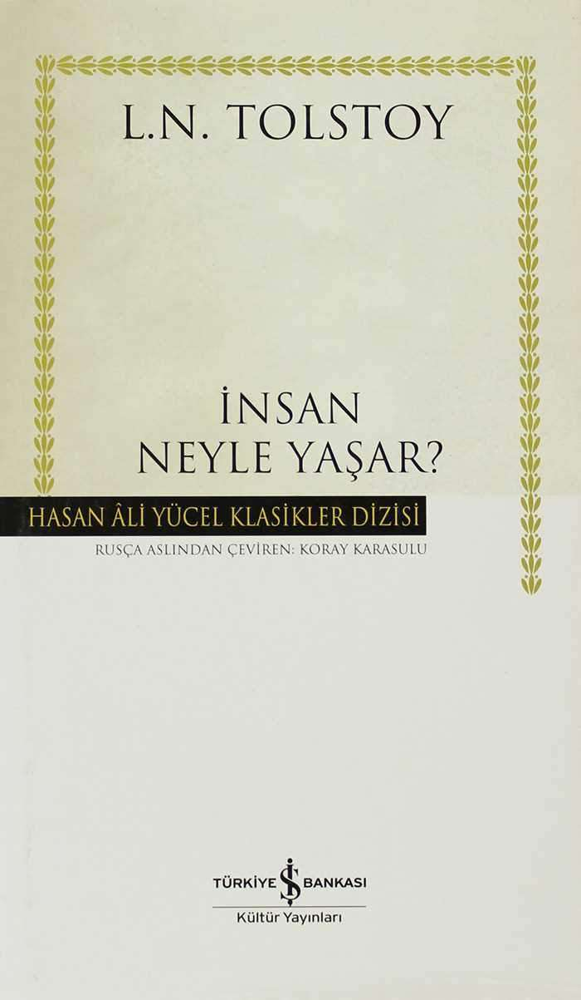
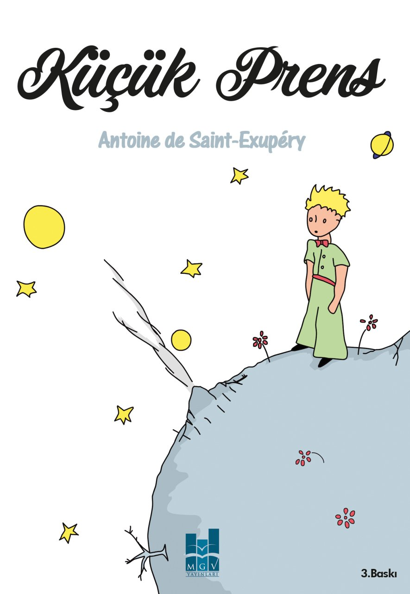
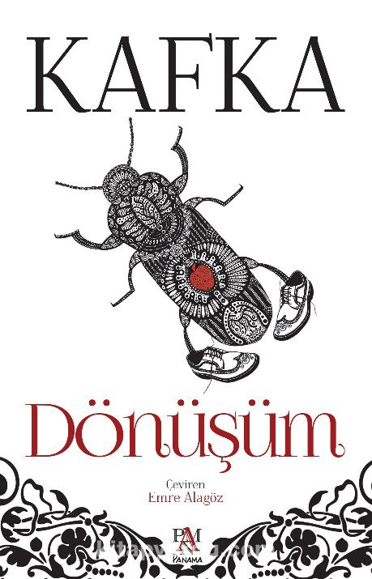
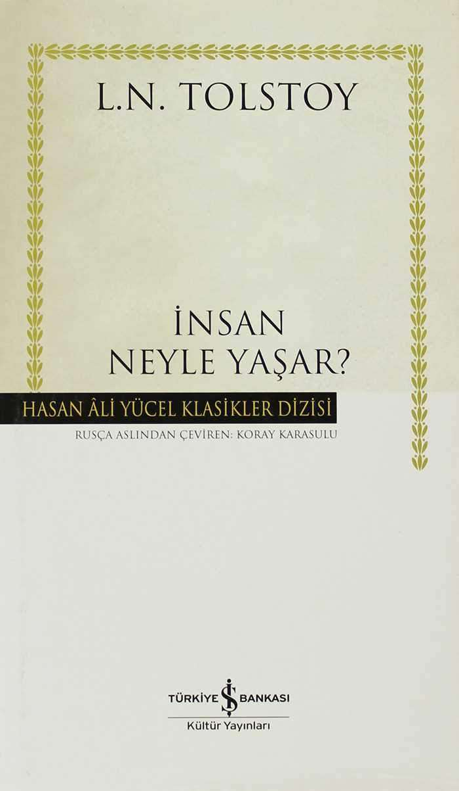
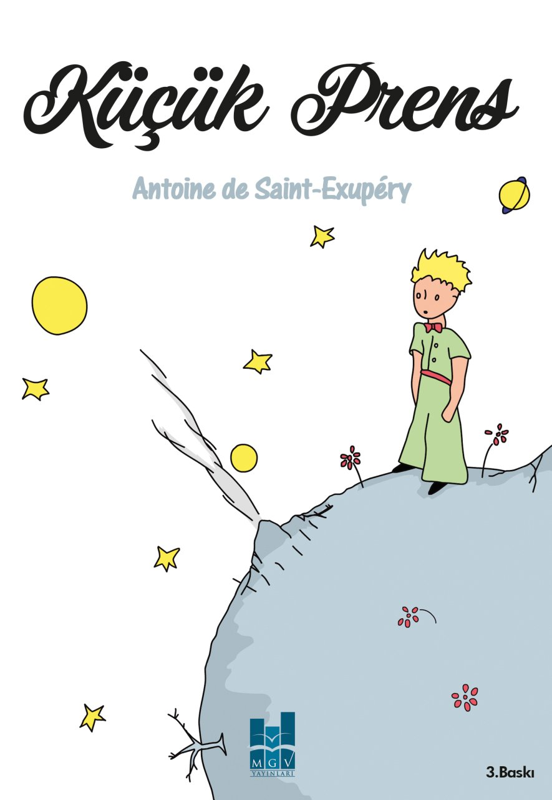
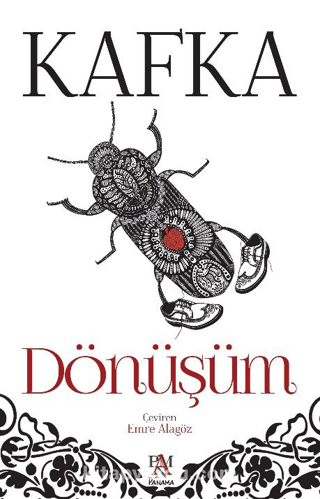
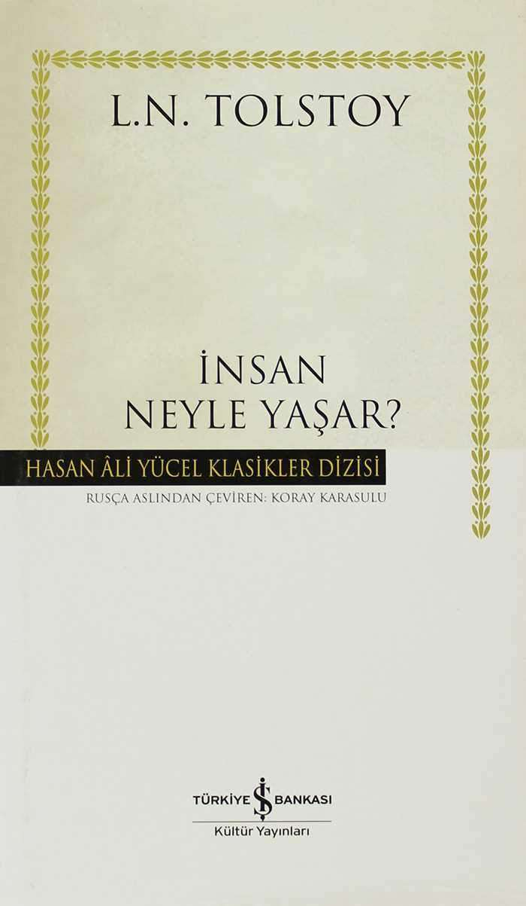
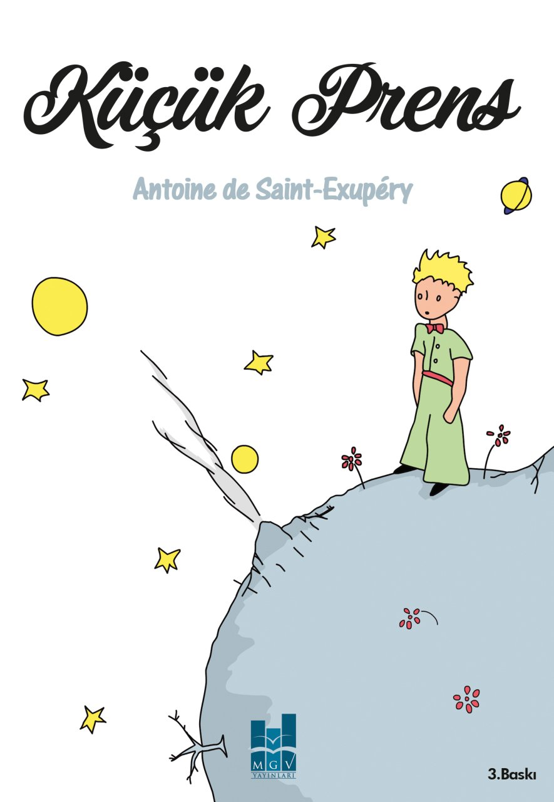
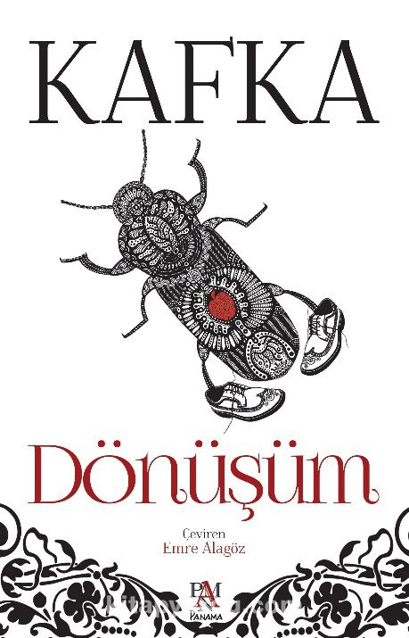

Siz de ölmeden önce yapılması gerekenleri listeleyenlerden misiniz? Cevabınız evet ise listenize kitap eklemeye ne dersiniz?
 





Siz de ölmeden önce yapılması gerekenleri listeleyenlerden misiniz? Cevabınız evet ise listenize kitap eklemeye ne dersiniz?
Kitap okumak seven insan için bir tutkudur. Konu insan olunca birbirimizden ne kadar farklıysak zevklerimizin de bir o kadar farklı olduğunu görürüz. Bu durum kitap okumak için de geçerlidir. Fakat bazı kitaplar vardır ki her insanda mutlak bir iz bırakacağı kesindir. İşte o kitapları kitap kurtlarının -hala okumadıysa- okunması için listeledik.


